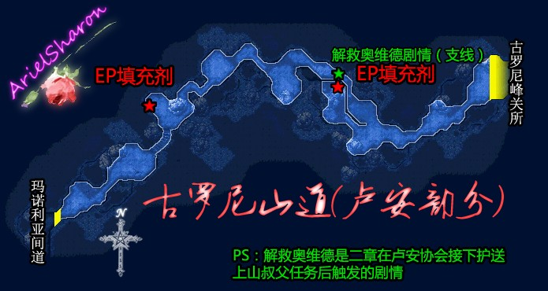
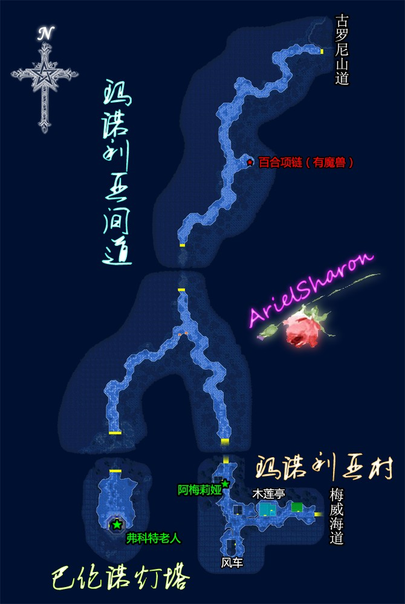
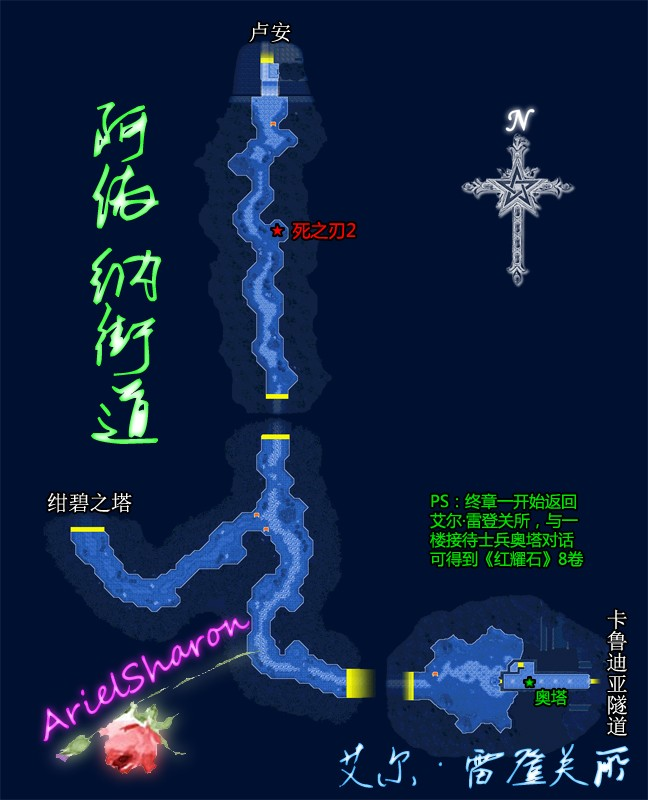
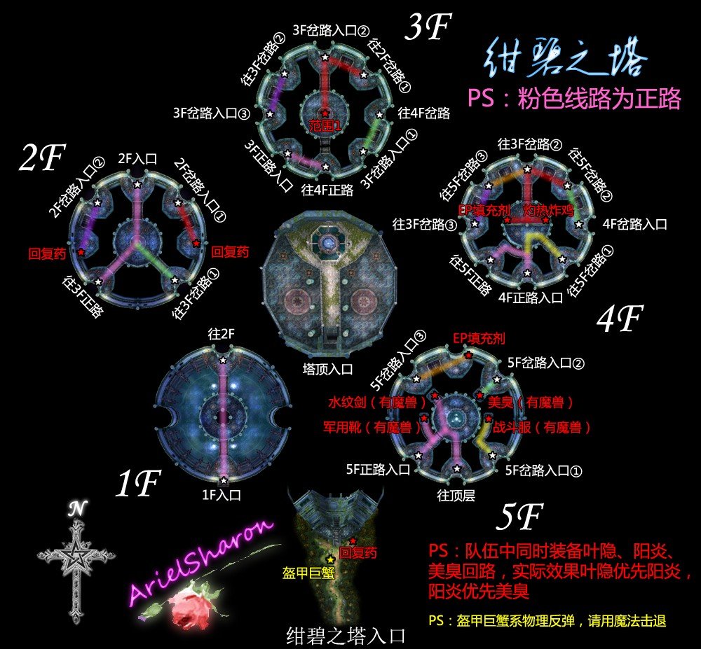
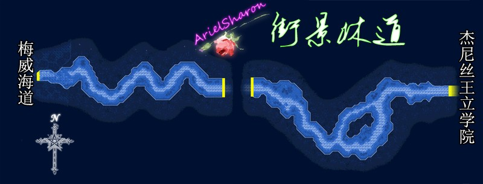

第二章 白花恋诗
◆主线任务⑴◆古罗尼山顶的魔兽 BP：2，2000mira
【利贝尔通讯】此时柏斯超市可买《利贝尔通讯第4号》后（卢安也能买到）
主角前往古罗尼山顶关所（如果得到游击士等级奖励阳炎就装备上吧，这可是偷袭怪物必备的好东西），剧情后在关所留宿，夜晚发生剧情，阿加特暂时入队，主角们前往关所西边击退魔兽。
翌日发生剧情后阿加特离队，主角继续前往卢安。


◆主线剧情◆
到达玛诺利亚村后前往白之木莲亭，与老板对话后出门，再前往西南风车处。离开风车时在路边发生剧情，之后与杂货店旁小摊上女商人萨蒂对话，从东边出村经梅威海道前往玛西亚孤儿院。
☆【料理手册】此时可获得的料理：料理朝摘香草茶（白之木莲亭，以后还可买）、沙拉三明治（白之木莲亭）、硬壳杂菜烩饭（白之木莲亭、大盘料理）
到玛西亚孤儿院后发生剧情，之后主角一行前往卢安。
{kind=link}
(地图有个小错误，西北那个场景内，回复药的东南方角落还有一个宝箱，内有回复药)
[支线]梅威海道靠近卢安的第二个场景沙滩边有一入口狭窄之岔路，进入岔路会发生解救吉米的支线剧情，请务必完成，此为调查古地图任务获得额外BP之条件。
海道最靠近卢安的场景沿海中暗道往南走可走到一片浅滩，调查浅滩中间的木桶可得"航海图的碎片"、"骷髅刀"，航海图碎片为完成调查古地图任务所需之物。
[支线任务⑴]梅威海道的通缉魔兽 BP：4（该任务必然触发），1500mira
卷尾蟾在海道最靠近卢安的场景的主干道上，必然会遇到，吃水属性，几率掉EP2
PS:梅威海道骑士甲克几率掉回避2
◆主线剧情◆
到达卢安支部发生剧情，之后去城区逛逛，参观过方柱型灯塔和伦格兰德大桥后众人来到南街区。
{kind=link}
☆【料理手册】此时可获得的料理：亚瑟利亚葡萄酒（拉旺塔尔赌吧）、黄油烤鱼面（拉旺塔尔赌吧）、酒蒸鱼籽（亚克罗萨船员酒吧）、健康泡饭（亚克罗萨船员酒吧、大盘料理）
到南街区仓库东南角落后发生剧情，随后在回大桥时发生剧情，之后返回协会。离开协会后前往布朗西酒店。第二天再前往游击士协会与嘉恩对话发生剧情。
◆主线任务⑵◆玛西亚孤儿院火灾调查 BP：5 + 4，3000mira
做完支线后回协会报告，之后前往玛西亚孤儿院。调查烧毁的门，房屋右边倒塌的石壁，两边的庄稼，院子右边的牛奶桶以及右下的花坛，之后询问现场的两名村民相关情况（即使调查其他地点前问过他们，调查完后也要再问一次），剧情选项选择人为纵火案（BP+2）。之后前往玛诺利亚村的白之木莲亭2楼房间。离开木莲亭时发生剧情，剧情选项选仓库一带的流氓（BP+2）。接着众人前往卢安南区仓库渡鸦帮处。
至渡鸦帮处发生剧情战，科洛丝入队，此战雷斯会技能持之以恒（单体复活加补满血），渡鸦帮3人在残血时会蓄力放蚀杀一击。剧情后回到协会报告。
[支线任务⑵]仓库的钥匙 BP：2，1000mira
最迟接受委托期限：开始学院的宿舍生活前
最迟完成期限：第3章通过艾尔·雷登关所
先看公告板后去和卢安南街区西边码头的哈库对话，之后去卢安南街区的亚克罗萨船员酒吧附近的木板桥就能发现钥匙（从酒吧对着的石桥过去后西边有台阶下去，然后沿着狭小的道路就能走到那座木板桥）。接着在亚克罗萨船员酒吧2F发现钓鱼杆，和店员斯库阿洛对话，借走钓鱼杆。然后再回木头桥板上钓起「仓库的钥匙」交还哈库就完成了。
[支线任务⑶]阿伊纳街道的通缉魔兽 BP:4,1500mira,「试·零式导力枪
最迟完成期限：在学院遇到乔儿和汉斯
从卢安南端出口出发在绀碧之塔旁找到通缉魔兽盔甲巨蟹。盔甲巨蟹系物理反弹，请用魔法击退之，打败魔兽可得「试·零式导力枪」，此为搜寻试制品任务必需。


【注:该地图有误,3F地图的左上楼梯是通往2F岔路入口②的】
[支线任务⑷]说服旅行者 BP：3+2、1000mira
最迟完成期限：开始校园生活
前往艾尔雷登，与哈恩队长对话发生任务。之后进入艾尔雷登的旅馆，说服杜南。(对话选项2112，选项这么寒酸的地方BP+1，阁下的脚下有好大的蟑螂BP+1)
[支线任务⑸]搜寻试制品 BP：3，1000mira，攻击2
最迟完成期限：开始校园生活
拿着在「阿伊纳街道的魔兽通缉」中战斗后魔兽掉落的「试·零式导力枪」，到乔安武器商会与加鲁诺对话就能达成。
回到卢安之后先把支线任务⑹需要的东西买好再出发去梅威海道。
【隐藏任务】[支线任务⑹]扫荡灯塔的魔兽 BP：4，1500mira
最迟完成期限：开始校园生活
该任务从本章开始即可进行，不过还是建议与下面的支线任务6一起完成。顺着玛诺利亚间道来到巴伦诺灯塔与弗科特老人对话得知灯塔被魔兽占据，逐层消灭之完成任务。
[支线任务⑺]运送维修工具箱 BP：4，1000mira
最迟完成期限：开始校园生活
与格拉纳特工房的索姆茨对话，接到了去给巴伦诺灯塔的佛古特老人送维修工具箱的指示同时得知老人喜欢去拉旺塔尔赌吧饮酒，之后去拉旺塔尔赌吧找普莱米奥对话，得到普莱米奥准备的特制「亚瑟利亚葡萄酒」并从普莱米奥口中得知老人喜欢喝酒的时候吃辣鳀鱼（玛诺利亚村杂货店有卖）。
把维修工具箱给了老人即可完成任务，若有葡萄酒（必须触发普莱米奥给葡萄酒的剧情，光有酒是不够的）可得"工作安全帽"，若有辣鳀鱼可得"斗魂扎头巾"（打人CP增长率*1.4倍，挨打*3倍，非常好用的饰品，FC全游戏只有2头巾，若此处未拿到需到终章才能获得另一头巾）。
如果之前的任务都完美完成的话升级为准游击士4级，得到奖励必杀之刃。
[支线任务⑻]护送上山的叔父 BP：5，1500mira
最迟完成期限：开始校园生活
在玛诺利亚村西北出口附近民宅门口与阿梅莉娅交谈，得知其叔父奥维德（就是序章那个让人找荧光菇的……）一个人去古罗尼山道了。赶去山道发现奥维德被魔兽围攻，解救奥维德后将其护送回玛诺利亚村。
[支线任务⑼]调查古地图 BP：3 + 2，1000（+1000）mira （曾在"一线天"的地形附近救过吉米一命+2）
最迟完成期限：第三章通过艾尔·雷登关所前
与教堂的吉米对话得到藏宝图的消息，之后将在梅威海道所得物品"航海图的碎片"交给吉米完成任务。
[支线任务⑽]烛台失窃 BP：7，5000mira
最迟完成期限：开始校园生活
去市长官邸与基尔巴特对话发生任务。之后按提示去卢安北街区的灯塔～拉旺塔尔赌吧２Ｆ的轮盘～卢安发射场的搬运车～卢安南街区的起重机的顺序调查。而且最后得到「仓库的钥匙」与哈库对话就完成任务了。如果没有完成「仓库的钥匙」任务的话，这个任务就不能完成。
【利贝尔通讯】欧尼尔免税店此时可购买《利贝尔通讯第5号》
◆主线任务⑶◆参加学园祭 BP：5 + 5（完成隐藏Ａ+3，隐藏Ｂ+1，隐藏Ｃ+1）3000(+2000)mira
主角一行前往杰尼丝王立学院（无法去学院剧情提示有东西未还的……如果实际已经还了……把修改出来的剧情物品改回去）先去主楼一楼最右边的房间与校长交谈，之后去社团大楼找乔儿。剧情后去二楼的学生会室找乔儿和汉斯（之后小约会暂时离队，请先将小约身上的重要回路装备卸下来）。

之后在学园祭前一天傍晚发生剧情，剧情后去找乔儿，在找乔儿前请先完成一些隐藏任务（此时队中只有艾科2人）。
（隐藏Ａ）剿灭旧校舍的魔兽 BP：3，1000mira
从学院东边出口到旧校园遇到学生米克，对话后得知旧校舍有魔兽，打倒校舍内的四组魔兽完成任务。魔兽攻击几率带毒。同时小约这个时候不在队伍，情报等重要回路可以考虑之前就拆下来。此外在旧校舍能捡到EP填充剂和复苏药。
（隐藏Ｂ）装饰校园 BP：1，500mira
来到校园主楼前同勤务员巴克斯对话，开始帮助检查校园未装饰的地方。调查主楼和社团大楼之间的走廊，北边男生宿舍门口，礼堂大门的右边，然后2人告诉并帮助巴克斯装饰校园。
（隐藏Ｃ）收集研究资料 BP：1，500mira
与社团大楼2楼资料室的罗基克对话，对方希望主角帮忙找3本《卢安经济史》。3本书分别在社团大楼2楼的男生更衣室椅子上，教职员室桌子上，男生宿舍阿吉尔德房间书桌上。找到后交还罗基克即可完成任务。
在校长室找到乔儿，之后一同去社团大楼同小约，汉斯汇合，然后选择点菜（如果上面3处隐藏任务没有完成就点菜的话将不能再有机会执行该3项任务）。剧情后小艾一行开始在校园里参观。
☆【料理手册】此时可获得的料理：咖啡冰淇淋、橙汁冰淇淋、苹果冰淇淋（冰淇淋摊），奶酪薄饼、皇家薄饼（饼摊），花色果冻、彩虹果冻豆（点心摊），空心爆米花（爆米花摊）
先到主楼与戴尔蒙市长和校长交谈，再到社团大楼与凯诺娜上尉交谈，之后再与亚鲁瓦教授交谈，选择带教授参观触发剧情。带教授去社会科学教室参观，之后下楼发生剧情。再之后到礼堂，剧情后去旧校舍找到小约发生剧情。
◆主线任务⑷◆特蕾莎老师被袭 BP：10，10000mira
祭典结束后回卢安，在回卢安的路上发生剧情，主角一行需前往玛诺利亚村。
★【红耀石】在前往玛诺利亚村前回卢安与在离北边入口不远的石桥上的玛奇尔达对话可得到《红耀石》第5卷
[支线任务⑾]梅威海道的通缉魔兽② BP：5，2000mira
赶去玛诺利亚村的途中遇到拦路的魔兽，主要魔兽和先前在该地区遇到的通缉魔兽一样，但数量多了，注意鬼火草的混乱攻击，用水系魔法效果较好。
◆主线剧情◆
前往白之木莲亭院长房间发生剧情，阿加特入队。剧情后众人来到巴伦诺灯塔。在灯塔每层发生一场剧情战，一共3战。塔顶发生BOSS战（影缝随机附带at delay/气绝/即死/毒效果）。
第二天主角3人回卢安游击士协会向嘉恩那里汇报发生剧情。剧情后前往市场官邸寻找市长，剧情选项选戴尔蒙市长。之后发生BOSS战，2个BOSS攻击较高，附带几率气绝/毒效果，不过么……科洛丝放个斗魂就废了……注意这2个一个物防较高一个魔防较高，死后会给另一个加状态（PS:顺便提句FC小约绝影/魔眼无视敌人AGL强制命中，非常好用）
BOSS战后发生剧情。之后会进入三章。
如果之前任务完美完成，此时会升级为准游击士3级，得到死之刃1。
本章的完美BP为198